Epoch 1 • 1.0 µm
Planet X Search Field (Epoch 1)
First survey pass capturing a deep stellar field with a simulated moving candidate.
Load in Viewer →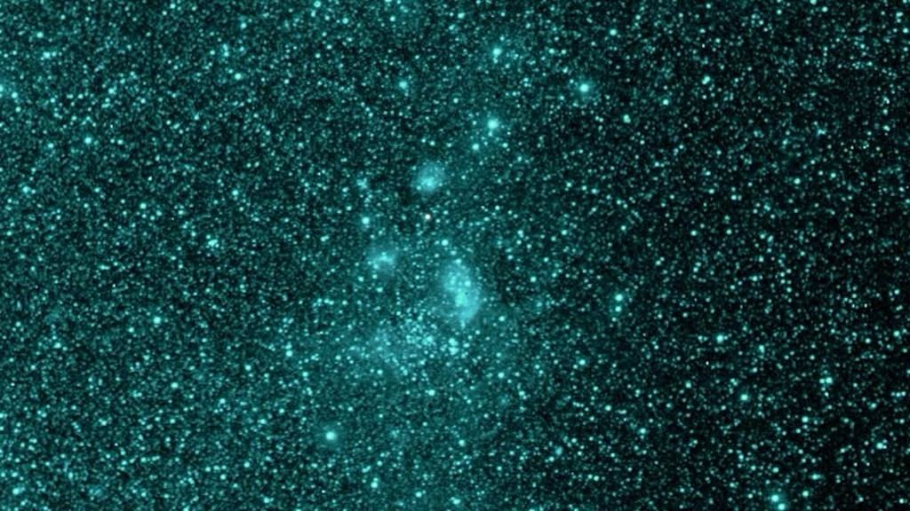
How SPHEREx decomposes celestial light across 102 near-infrared channels to separate foreground stars, solar system objects, and distant galaxies.
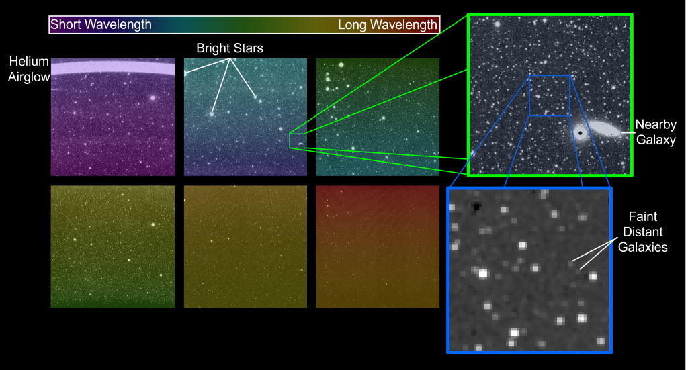
Spectrophotometric Progression: Shorter near-infrared bands capture geocoronal Helium Airglow and bright Milky Way star continuum, while longer infrared channels penetrate obscuring dust to reveal spiral arms in nearby galaxies (green box) and faint, highly redshifted early galaxies (blue box).
Browse sample astronomical survey images. Click any card to load that exact observation patch into the Sky Viewer.
First survey pass capturing a deep stellar field with a simulated moving candidate.
Load in Viewer →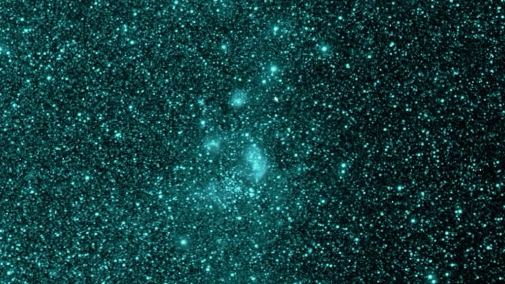
Epoch 2 • 1.4 µmSecond survey epoch 10 months later; blinking with Epoch 1 reveals candidate displacement.
Load in Viewer →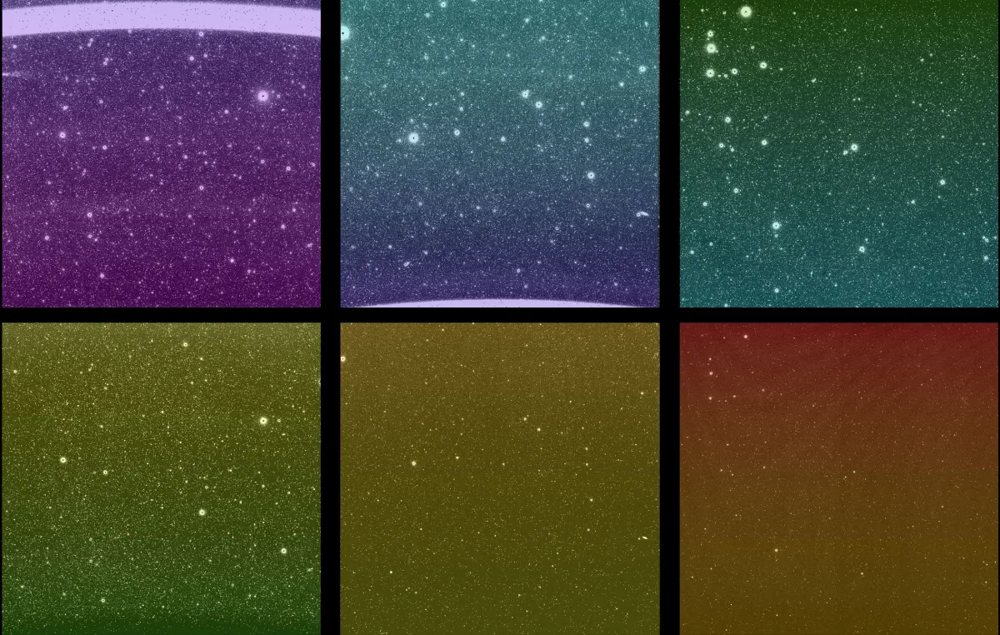
6-Channel Focal PlaneRaw detector mosaic showing the spectrophotometric transition across 0.75–5.0 µm.
Load in Viewer →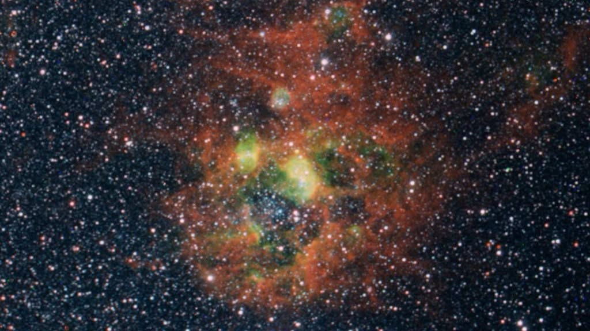
Band 4 • 3.1 µmInfrared emission tracing hot circumstellar gas and active protostellar nurseries.
Load in Viewer →Mid-infrared thermal continuum emission tracing cold interstellar dust boundaries.
Load in Viewer →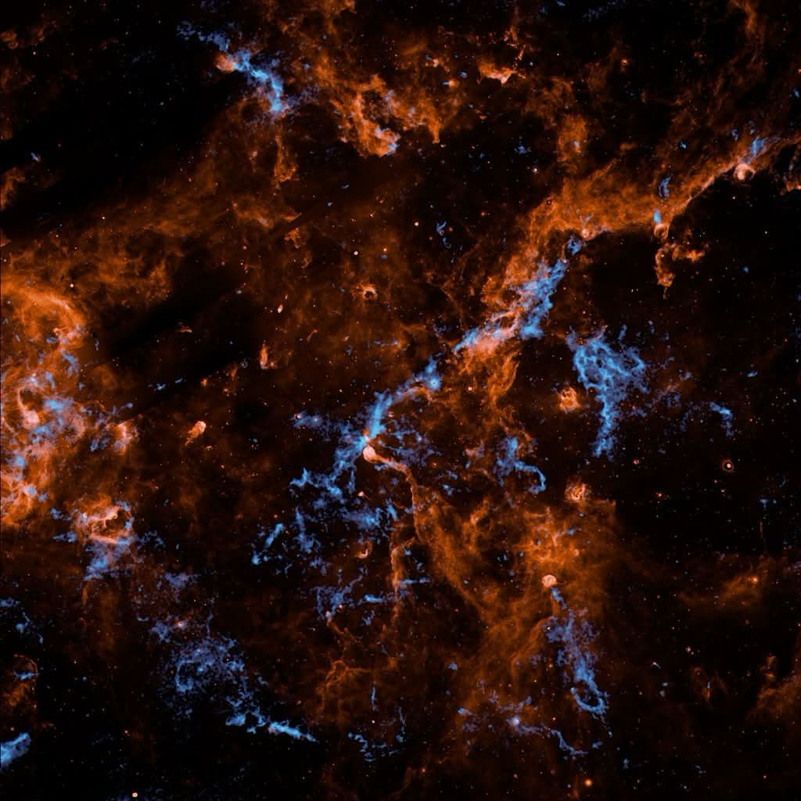
Band 6 • 4.8 µmCold, supercritical filaments collapsing to trigger new star birth within warm diffuse gas.
Load in Viewer →Dense near-infrared stellar survey penetrating obscuring dust lanes along the Galactic disk.
Load in Viewer →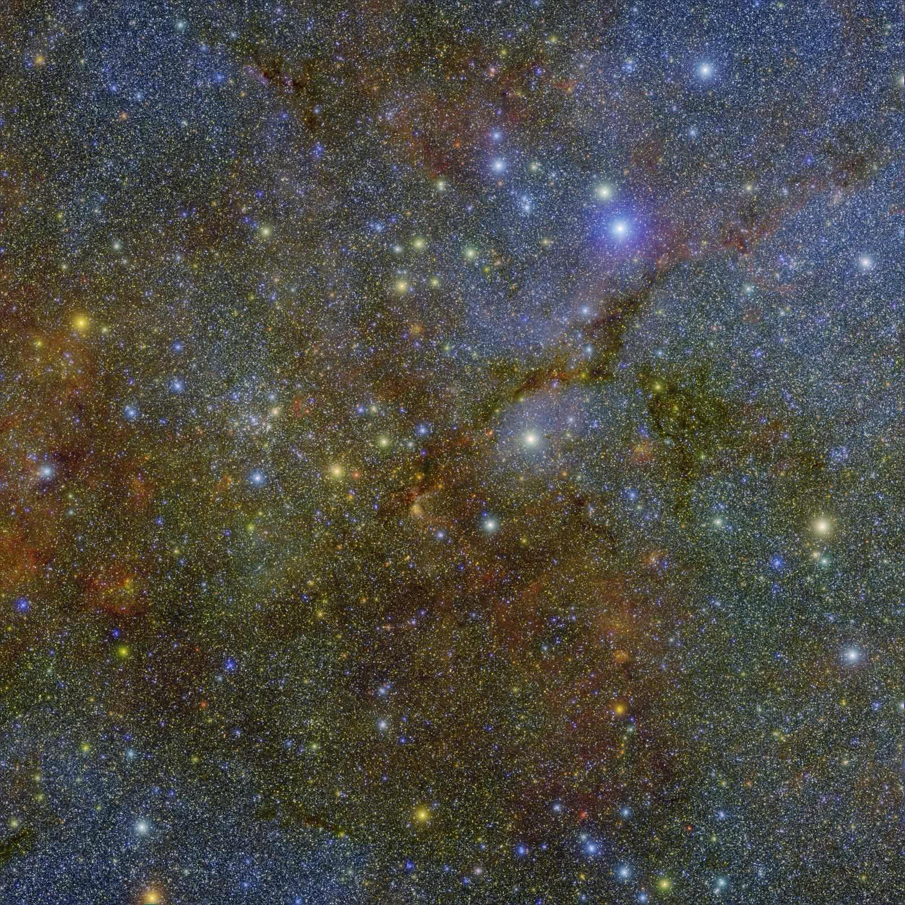
High-Res Deep FieldFull-fidelity deep observation resolving stellar continuum along the inner Galactic disk.
Load in Viewer →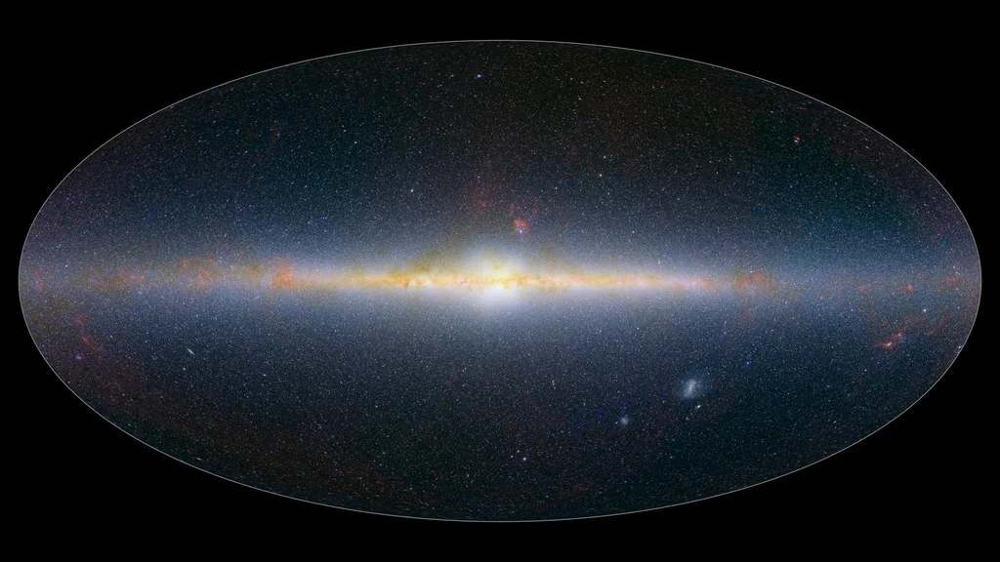
All-Sky • 1.00 µmFull celestial sphere map from the 2025 survey showing hundreds of millions of stars and distant galaxies.
Load in Viewer →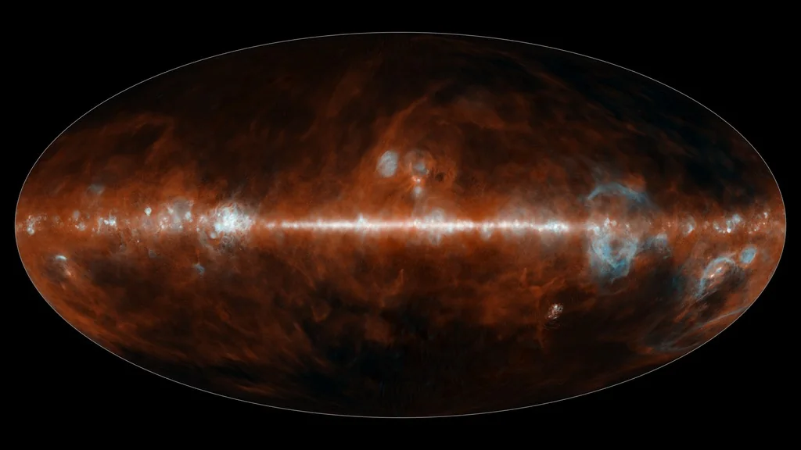
All-Sky • 4.80 µmAll-sky infrared survey revealing warm interstellar dust grains and molecular gas clouds.
Load in Viewer →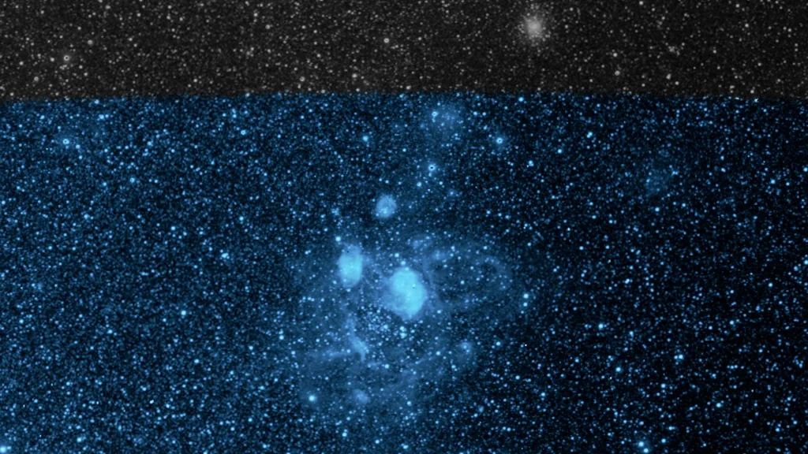
Band 1 • 0.96 µmEarly SPHEREx observation of the LMC nebula tracing ionized sulfur (S III) emission lines.
Load in Viewer →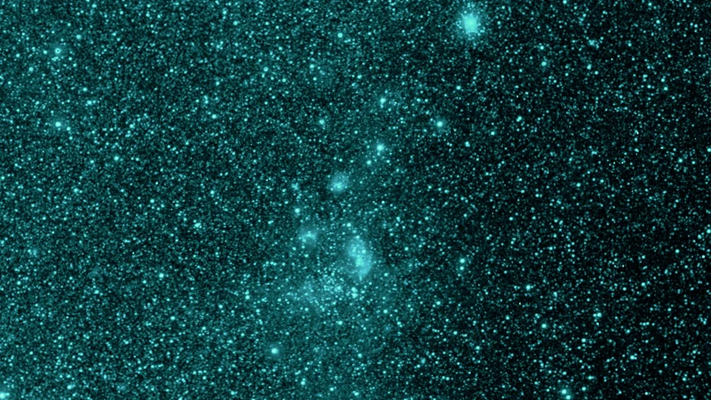
Band 2 • 0.98 µmNear-infrared continuum revealing dense stellar populations within the star-forming nursery.
Load in Viewer →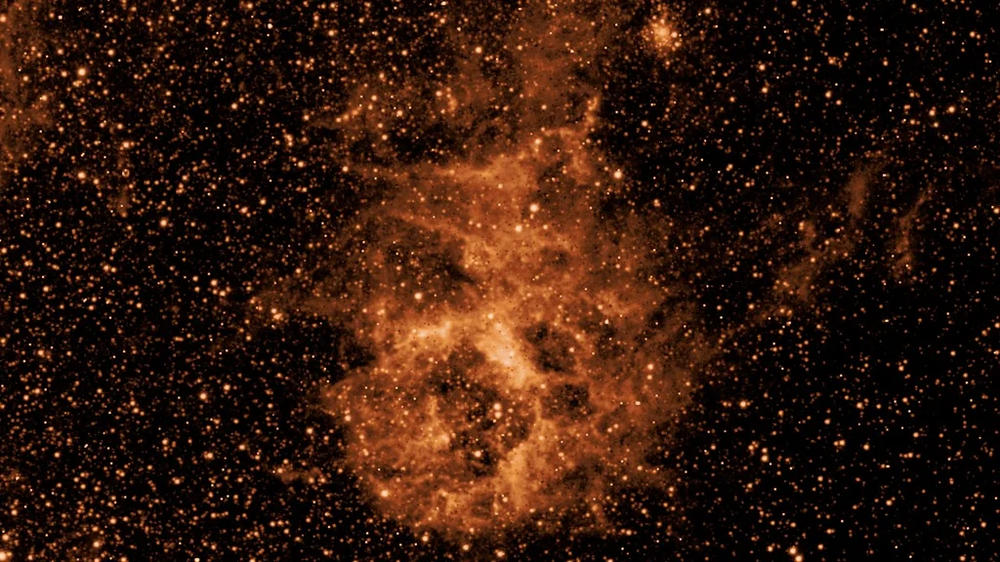
Band 3 • 3.29 µmThermal emission from polycyclic aromatic hydrocarbons outlining turbulent dust boundaries.
Load in Viewer →AvmImage 44: High-resolution infrared mapping of stellar continuum and warm interstellar dust across Cygnus.
Load in Viewer →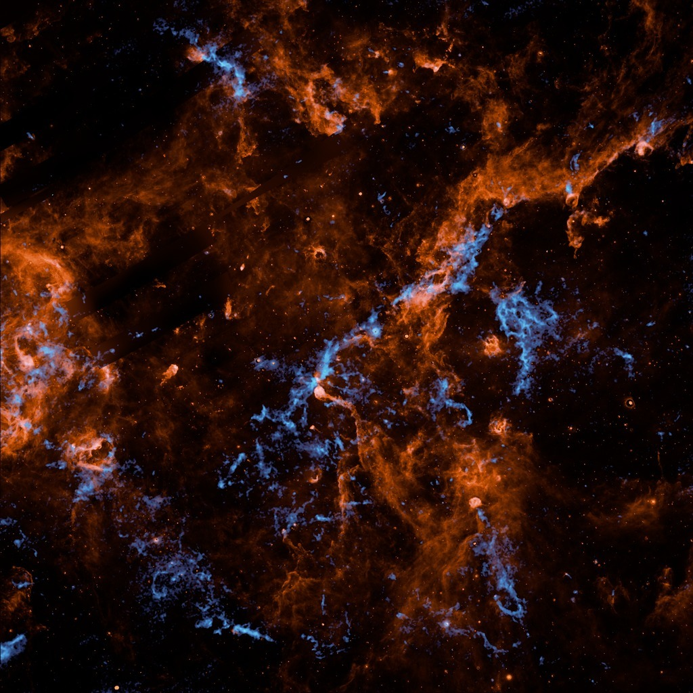
Band 3 • 3.0 µmAvmImage 43: Infrared spectroscopic mapping tracing interstellar water (3.0 µm) and carbon ice absorption features.
Load in Viewer →PROJECT SPECTRALx is engineered to interface with the NASA SPHEREx mission archive hosted at the NASA/IPAC Infrared Science Archive (IRSA) at Caltech.
Scientific surveys distribute multi-band images as large Flexible Image Transport System (FITS) files. Our backend pipeline uses Python, Astropy, and NumPy to parse WCS coordinate headers, subtract sky background, apply flux non-linear stretching, and tile outputs into responsive web images served via GET /api/sky-view?ra=&dec=.
/api/sky-view)
Delivers JSON containing target coordinates, observation dates, and tile URLs.
The researchers, designers, and engineers behind the SPHEREx Sky Explorer.
Project leadership, SPHEREx survey methodology, Python/Astropy FITS processing pipeline, and Caltech IRSA archive integration.
Full-bleed sky viewer architecture, time-slider 1:1 pointer tracking, Blink Comparator engine, and API-first fallback client.
Apple Liquid Glass visual tokens, accessibility compliance, responsive layout grids, and interactive ergonomics.